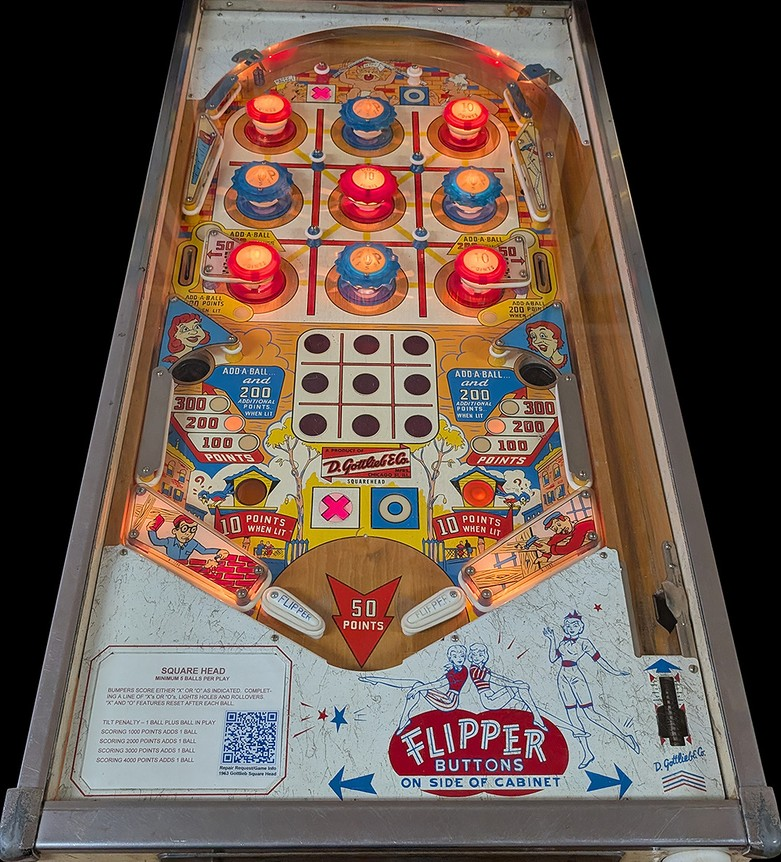

Not to be confused with Egg Head (Gottlieb, 1961), a similar earlier tic-tac-toe game.
Any switch in the game alternates whether an X or O symbol is currently selected. Hitting any of the game's 9 bumpers places the currently selected symbol into the corresponding box on the tic-tac-toe board shown near the flippers, if there is not already a symbol in that box. The four corner bumpers are passive bumpers, and the other 5 bumpers that form a + shape are pop bumpers. The corner bumpers and center pop bumper score 10 points, while all other bumpers score 1.
The upper side lanes score 50 points, or 200 points plus 1 extra ball when lit. The inserts near the gobble holes indicate whether the gobble holes score 100, 200, or 300 points; if the inside of the gobble hole itself is lit, that gobble hole scores 200 points plus 1 extra ball on top of the gobble hole's normal indicated value. The 100-200-300 value at the gobble holes is rotated by going through either upper side lane or draining the ball in any way. Both upper side lanes and both gobble holes are lit for extra ball if any 3-in-a-row of the same symbol is made on the tic-tac-toe board. All earned symbols and all lit extra balls unlight when the ball drains.
There are no in lanes or out lanes. The only drains are the center drain between the flippers, which scores 50 points, and the gobble holes, whose values are described in the previous paragraph. Slingshots extend from behind the flipper hinges to the edges of the table, and score 1 point or 10 when lit. The left slingshot is lit when O is selected, and the right slingshot is lit when X is selected. Tilt ends the ball in play and subtracts one further ball, but does not end game.
The below picture of Square Head's playfield was taken from the Open Pinball Database.
